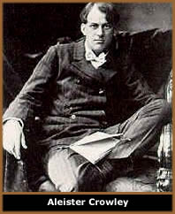
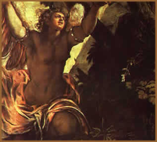

O Luciferianismo é uma doutrina
derivada do Satanismo,
que busca virtudes como iluminação, sabedoria, orgulho,
independência e liberdade de sua principal divindade, Lúcifer.
Ao mesmo tempo é subjetivo, baseado em experiências
e aceitação pessoais, sofrendo influências
de outras crenças. Assim, não possui uma base rígida
de dogmas a serem seguidos, sendo transmitido oralmente e praticado,
geralmente, de forma individual.
Historicamente, não há uma origem
precisa sobre o início do Luciferianismo. Mas há
um conjunto de conceitos que se desenvolveu ao longo dos tempos
em várias culturas distintas e resultou no Luciferianismo
conhecido atualmente.
As serpentes e os dragões, que são
representações de Lúcifer em várias
culturas, são também símbolo de sabedoria
e eternidade. Estes animais eram alvos de adoração
no Egito, Babilônia, Pérsia, e entre os Incas americanos.
Assim, podemos supor que esta filosofia já era praticada
há muitos séculos.
Na Bíblia podemos encontrar várias
alusões à serpente: "Porque Deus sabe que
no dia em que dele comerdes se abrirão os vossos olhos,
e sereis como Deus, sabendo o bem e o mal" (Gênesis
– Cap. III – Versículo V). Neste versículo,
a serpente induz Eva a comer o fruto no Éden. Mas segundo
a interpretação dos luciferianistas, encontra-se
claramente a simbologia da serpente como portadora da chave que
possibilita o homem tornar-se Deus.
Ainda, na Europa medieval, precisamente no ano
de 1223, havia boatos sobre um grupo conhecido como Luciferianos.
Na verdade, esta "seita" era composta apenas por pessoas
que recusavam-se a pagar os impostos exigidos pelo Clero, e por
esse motivo foram acusados de "adoradores do demônio"
e, obviamente, vítimas da Santa
Inquisição. Embora isso seja apenas um boato,
ainda hoje é usado como um argumento metafórico
pelos luciferianos.
Deístas
e Agnósticos
Num
aspecto geral, o Luciferianismo pode ser subdividido em duas categorias,
nas quais as denominações variam e não são
tão significativas para sua compreensão. As modalidades
são conhecidas como Deísta e Agnóstico, Tradicional
ou Moderno (termos absorvidos do Satanismo), etc.
Os adeptos do Luciferianismo Deísta identificam
Lúcifer como o criador do universo, um ser onipresente
e onipotente. Neste caso, Lúcifer assume as características
principais de uma divindade.
Os luciferianos agnósticos vêem Lúcifer
como um arquétipo, ou seja, uma referência de virtudes
que são visadas por seus adeptos. Esta variação
é nitidamente influenciada pelo Satanismo moderno promovido
por Anton LaVey, no qual não há uma divindade específica,
mas cada indivíduo eleva-se a ponto de considerar-se "seu
próprio Deus". Este conceito também nos remete
a ideologia do Thelema,
tendo como seu principal divulgador o ocultista, Aleister Crowley.
Mas em todas as variações, Lúcifer
é visto como um ser que abriga em si os opostos entre Luz
e Trevas, e por conseqüência, o equilíbrio entre
os pólos. Este conceito é totalmente contrário
a muitas religiões que possuem figuras que representam
os arquétipos de bem e mal de forma distintas. A aceitação
de uma única referência que é paralelamente
Luz e Trevas, segundo os adeptos, é a principal diferença
do Luciferianismo em relação aos outros sistemas
religiosos. Dessa forma, não há um confronto entre
"Deus x Diabo"; ao contrário, há uma união
dessas forças que são igualmente responsáveis
e necessárias para a evolução humana.
Quem é
Lúcifer?
Desde a Antiguidade, passando pelos filósofos
e desembocando na figura conhecida erroneamente como o "demônio
cristão", diversos personagens da mitologia e divindades
cultuadas em inúmeras e distantes culturas, possuem alusões
a seres, sejam arquétipos ou concretos, que trazem consigo
as características conhecidas em Lúcifer. A literatura
contemporânea também o aborda amplamente, como as
citações ocultistas de Helena
Blavatsky e Eliphas
Levi, e na obra poética de John Milton, Paradise
Lost.
Segundo o mito cristão, Lúcifer era
o mais forte e o mais belo de todos os Querubins e conquistou
uma posição de destaque entre os demais. Porém,
Lúcifer tornou-se orgulhoso de seu poder e revoltou-se
contra Deus. O Arcanjo Miguel liderou as hostes divinas na luta
contra Lúcifer e os anjos
o derrotaram e o expulsaram do Reino do Céu. Mas a idéia
de que Lúcifer rebelou-se contra o Criador e foi expulso
também está presente em outras culturas, além
do Cristianismo.
Por
ser o "Portador da Luz", na Roma Antiga, Lúcifer
foi associado ao planeta Vênus que, devido sua proximidade
com o Sol, pode ser visto ao amanhecer. O anjo também é
chamado de "Estrela da Manhã" e "Estrela
d’Alva". Na Mitologia Romana era o filho de Astraeus
e Aurora, ou de Cephalus e Aurora. Entre os gregos, Lúcifer
pode ser associado com Apolo, o "Deus do Sol".
Nos estudos da Demonologia,
diferentes autores atribuem a Lúcifer características
comuns. No Dictionaire Infernale (1863) e no Grimorium
Verum (1517), é o "Rei do Inferno" responsável
por assegurar a justiça. No O Grimório do Papa
Honório (século XVI ou XVII), Lúcifer
também assume a função de "Imperador
Infernal". Lúcifer também é cultuado
numa variação da Wicca, sendo visto como o Deus
do Sol e da Lua dos antigos romanos.
Luciferianismo
& Satanismo
Apesar de popularmente Lúcifer e Satã
serem quase sinônimos e esta idéia estender-se ao
Satanismo e ao Luciferianismo, há diferenças primordiais
entre eles e, por conseqüência, aos sistemas religiosos
que os cercam.
Ao longo dos séculos, estes dois personagens
também foram representados artisticamente de formas distintas.
Por ser um anjo, Lúcifer, é comumente retratado
como um homem com asas e, por vezes, empunhando um cajado. Enquanto
Satã tem sua imagem associada ao homem com chifres e patas
de cabra, muito semelhante ao deus Cornífero (ou Pã),
divindade masculina e símbolo de fertilidade cultuada entre
os pagãos.
Mas,
talvez a maior e mais significativa diferença entre ambos
os conceitos, encontra-se na origem das palavras. O termo Lúcifer
origina-se no latim e significa "O portador da Luz"
(Lux ou Lucis = Luz + Ferre = Carregar). A palavra Satã
origina-se no hebraico, Shai'tan, e significa "Adversário";
podendo ser também uma variação do nome da
divindade egípcia Set-hen. Dessa forma podemos deduzir
que, genericamente, o Luciferianismo busca a Iluminação
através de Lúcifer. Enquanto o Satanismo pode caracterizar-se
pela oposição, neste caso, ao cristianismo. Assim,
os luciferianos consideram que sua filosofia é um "aprimoramento"
do Satanismo, apesar de não ser tão conhecido quanto
a doutrina promovida por LaVey.
A combinação da imagem de Lúcifer
ao "demônio cristão" foi ocasionada por
uma interpretação equivocada do livro de Isaías:
"Como caíste desde o céu, ó estrela
da manhã, filha da alva! Como foste cortado por terra,
tu que debilitavas as nações! E tu dizias no teu
coração: Eu subirei ao céu, acima das estrelas
de Deus exaltarei o meu trono, e no monte da congregação
me assentarei, aos lados do norte. Subirei sobre as alturas das
nuvens, e serei semelhante ao Altíssimo. E, contudo levado
serás ao inferno, ao mais profundo do abismo"
(Isaías – Cap. XIV – Versículo XII a
XV).
Este trecho narra as intenções do
rei da Babilônia que almejava tornar-se maior que Deus,
mas São Jerônimo, que ao traduzir a Bíblia
do grego para o latim no século IV, associou esta passagem
com Lúcifer e à serpente tentadora, ou seja, a simbologia
do diabo cristão. Anteriormente, Lúcifer não
havia essa relação. Tanto que, oficialmente, a Igreja
não atribui a Lúcifer o papel de diabo, mas apenas
a condição de "anjo caído".
Magia, rituais
e pactos luciferianos
O Luciferianismo adotou diversas práticas
ritualísticas e cerimoniais de outros sistemas mágicos,
caracterizando assim, uma corrente de idéias próprias
com objetivos distintos nesta doutrina. As influências sobre
o Luciferianismo variam de antigos rituais pagãos até
os conceitos contemporâneos do Satanismo.
Podemos citar como exemplos as chamadas práticas
Internas e as práticas Externas, que subdividem-se em Herméticas
e Cerimoniais. A Magia(k) (termo derivado da filosofia thelêmica)
Interna é mais comum entre os luciferianistas, pois atua
diretamente no estado de consciência e no espírito
do praticante. A Magia(k) Externa é mais complexa e elaborada,
exigindo uma série de fatores como dia e horários
pré-estabelecidos, um local adequado, vestimentas e instrumentos
próprios para efetuar mudanças no plano físico.
Neste caso, pode ser praticada solitariamente (Hermética)
ou em grupo (Cerimonial). Mas ambas são igualmente importantes
entre os luciferianistas, e o sucesso de uma modalidade interfere
na outra.
É falso o conceito das chamadas Missas Negras,
as quais seriam paródias blasfêmicas das liturgias
católicas, utilizando-se de urina e fezes para substituir
a hóstia e o vinho, recitando orações ao
contrário e promovendo orgias entre os praticantes. Também
é irreal a idéia de sacrifício humano ou
animal. Neste caso, há apenas um sacrifício simbólico.
Há ainda o conceito do "pacto com o diabo" (muito
comum na crendice popular), no qual o praticante "vende a
alma pro diabo" em troca de riquezas e sucesso. Sob a ótica
luciferianista, o único pacto aceitável é
o compromisso consigo próprio de buscar a iluminação
espiritual utilizando-se da força da própria vontade.
Por
Spectrum
Fonte principal:
http://luciferianism.cjb.net
- Lilith Ashtart - For my Fallen Angel HP